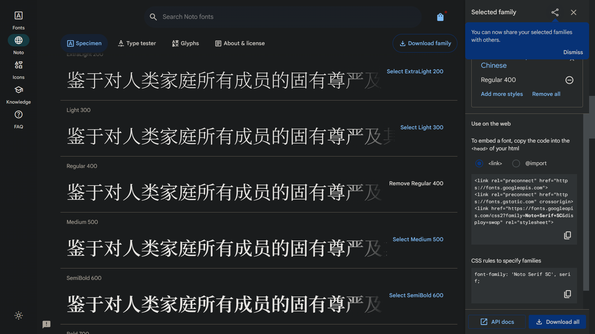
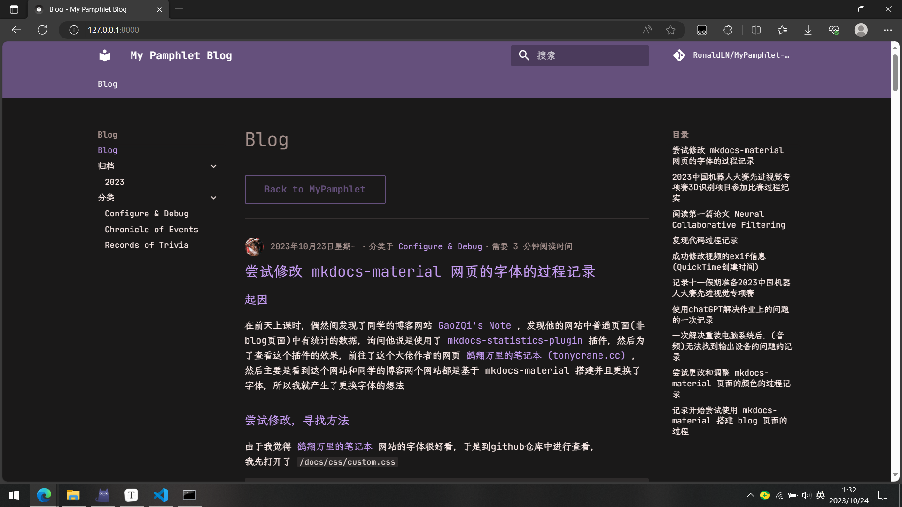

尝试修改 mkdocs-material 网页的字体的过程记录
起因
在前天上课时，偶然间发现了同学的博客网站 GaoZQi's Note ，发现他的网站中普通页面(非blog页面)中有统计的数据，询问他说是使用了 mkdocs-statistics-plugin 插件，然后为了查看这个插件的效果，前往了这个大佬作者的网页 鹤翔万里的笔记本 (tonycrane.cc) ，
然后主要是看到这个网站和同学的博客两个网站都是基于 mkdocs-material 搭建并且更换了字体，所以我就产生了更换字体的想法
尝试修改，寻找方法
由于我觉得 鹤翔万里的笔记本 网站的字体很好看，于是到github仓库中进行查看，
我先打开了 /docs/css/custom.css
:root {
--md-text-font: "JetBrains Mono", "LXGW WenKai Screen";
--md-code-font: "JetBrains Mono";
}
...
发现只有这里是进行了字体的设置，其中我知道 JetBrains Mono 是 JetBrains 开发的英文字体，那么 LXGW WenKai Screen 应该就是中文的字体了
但一开始我以为还会有其他的设置字体的 css 文件，因为之前看同学博客的仓库里 custom.css 中的设置也是类似，但还有一个 /docs/css/fonts.css 文件
/* JetBrains Mono */
@import url('https://fonts.loli.net/css?family=JetBrains Mono:400,500,600,700&display=swap');
/* Noto Sans SC */
@import url('https://fonts.loli.net/css2?family=Noto Sans SC&display=swap');
/* 思源宋体 */
@import url('https://fonts.googleapis.com/css2?family=Noto Serif SC&display=swap');
/* Roboto Slab */
@import url('https://fonts.googleapis.com/css2?family=Roboto Slab&display=swap');
/* Roboto*/
@import url('https://fonts.googleapis.com/css2?family=Roboto&display=swap');
来导入相关的字体，又或者设置相关的字体，
而且根据我的理解， custom.css 中的设置应该也只是设置了关键字，如果没有对对应字体进行设置或者导入的话，应该还是使用不了
然后我有进行过一次尝试，确实只在我的
extra.css文件中设置--md-text-font和--md-code-font在预览中字体并没有改变
暂时没有头绪，然后想起官方文档中好像有设置字体相关的说明，于是前往查看 Changing the fonts - Material for MkDocs (squidfunk.github.io) ，
发现如果不使用自定义 css 文件的方法，只能选择 Google Font 上有的字体(搜索发现 Google Font 上没有 LXGW WenKai Screen 字体)，并且(应该)不能像上面说的两个网站一样设置多个字体(中文用一种，英文用另一种)，
于是查看自定义 css 的方法，
docs/stylesheets/extra.css
发现与那两个网站的设置方法不一样，
然后(由于还是没有头绪，所以)我在网上搜索 LXGW WenKai Screen ，找到了这个字体的 github 仓库
在 README.md 中
若需要在网站上使用这款字体，请参阅 Issue #24。
于是查看该 Issue ，发现里面链接到另一个仓库 chawyehsu/lxgw-wenkai-webfont: webfont package for the LXGW WenKai typeface (github.com) ，
本来从仓库的 README.md 的 Usage 中没找到合适的方法，但是在搜索 mkdocs material 自定义字体 时，发现了一片文章
其中最下方 基于Mkdocs的网站字体美化用法 中的设置我看起来感觉和仓库中的设置有些相似(即添加字体的 css 文件来导入字体)，
在mkdocs.yml中添加以下内容
extra_css: - https://cdn.jsdelivr.net/npm/lxgw-wenkai-webfont@1.1.0/style.css # - https://cdn.jsdelivr.net/npm/lxgw-wenkai-lite-webfont@1.1.0/style.css # - https://cdn.jsdelivr.net/npm/lxgw-wenkai-tc-webfont@1.0.0/style.css # - https://cdn.jsdelivr.net/npm/lxgw-wenkai-screen-webfont@1.1.0/style.css然后在extra.css中添加以下内容
body { font-family: "LXGW WenKai", sans-serif; /* Lite version */ /* font-family: "LXGW WenKai Lite", sans-serif; */ /* TC version */ /* font-family: "LXGW WenKai TC", sans-serif; */ /* Screen version */ /* font-family: "LXGW WenKai Screen", sans-serif; */ }四选一，mkdocs.yml和extra.css相互对应
然后我进行了尝试，发现可行，
此外发现这篇文章其实是作者在他自己的博客上(这个博客好像之前另外一个同学还给我有提到过，大致看了一下里面似乎写了很多关于 mkdocs-material 的设置，以后有机会看看)
写的 修改网站字体 - Wcowin's Web ，然后转发到 csdn 上的
然后我发现，这个方法中 css 中的 font-family 属性的设置，有在 mkdocs-material 官方文档设置自定义字体 中 Regular font 处代码中的 评注 annotation 中有提到过，所以我猜测，上面这个方法中 font-family 后填的关键字字符串，也可以在 --md-text-font --md-code-font 后，然后经过尝试，发现可行😆，
此时我又注意到，这个方法中，导入字体是在 mkdocs.yml 中 extra_css 中导入的，所以我才开始去查看 鹤翔万里的笔记本 (tonycrane.cc) 的 mkdocs.yml
extra_css:
- https://cdn.tonycrane.cc/jbmono/jetbrainsmono.css
- https://cdn.tonycrane.cc/lxgw/lxgwscreen.css
发现确实是在此处进行导入字体，
所以，到这里，我终于弄明白了，可以直接在 mkdocs.yml 中导入字体 css 文件，也可以像同学一样，通过 css 文件(他的 fonts.css )来导入字体的 css 文件，然后导入之后再设置 --md-text-font --md-code-font 属性就能更改网页的字体了😆
设置字体
选择字体
正文的字体我打算采用和 鹤翔万里的笔记本 (tonycrane.cc) 一样的字体(英文 JetBrains mono ，中文 霞鹜文楷)，于是 --md-text-font 设置成和作者一样，
然后这时我才意识到，把英文字体放在前面，才能使得中英文字体不一样，因为这样才会英文字体找不到再在中文字体中寻找，
而代码的字体，英文我也打算使用 JetBrains mono ，中文我选择了一会，打算使用 思源宋体 Noto Serif SC ，
查找字体 css 文件
于是开始查找 Noto Serif SC 的 css 文件，然后发现在 Google Font 上有这个字体，但是一开始没弄明白如何获取 css 文件，
经过一番摸索，发现需要在字体页面下方 Styles 处选择一个或多个规格，我选择了 Regular 400 ，然后再点击网页右上角的像购物袋的(会显示 View selected famalies 的)图标，

然后在右侧可以找到对应的地址/链接
以及字体对应的关键字 Noto Serif SC
然后将链接直接放入 mkdocs.yml 的 extra_css 中，再在自定义的 css 文件(这时我用的是 extra.css 来测试的)中设置关键字，
最后预览中能看到显示相应的字体😆
将 google 的地址换成国内的
由于注意到同学是用了 fonts.loli.net 的域名(可见上面 fonts.css 中的代码)，而我也认为可能把google相关的域名换成其他的会好一点，
于是搜索相关信息，然后发现一篇文章
使用 CDN 或直接引入的方式，更换网站中文字体_html font字体 cdn链接-CSDN博客
里面提到了四个站点/域名
-
css https://fonts.googleapis.cnpmjs.org -
css https://fonts.font.im -
css https://fonts.proxy.ustclug.org -
css https://fonts.loli.net
fonts.proxy.ustclug.org好像之前搜索的时候有看到这个是中科大的域名
最后我打算也采用 fonts.loli.net (跟同学一样😉)
最后修改后的效果
